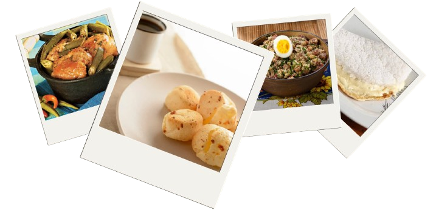
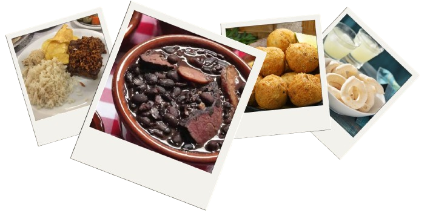
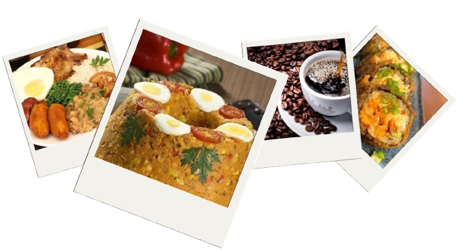
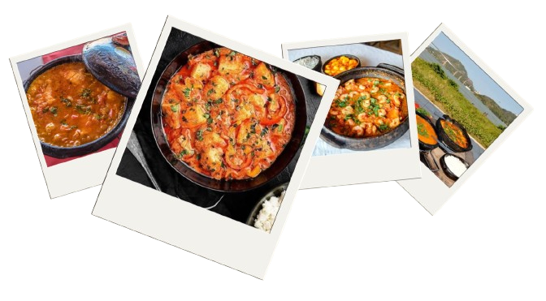

História
A Região Sudeste (SP, RJ, MG e ES) ganhou destaque no
período colonial com o ciclo do ouro em Minas Gerais (fim do
séc. XVII), o que levou a capital da colônia a ser
transferida de Salvador para o Rio de Janeiro em 1763. No
século XIX, o café impulsionou a economia paulista, gerando
riqueza que financiou a industrialização, principalmente em
São Paulo. Com as fábricas, a região atraiu grandes fluxos
migratórios (imigrantes europeus e depois nordestinos),
tornando-se o principal polo econômico, industrial e
populacional do Brasil até hoje.
Cultura
O Sudeste tem cultura marcada pela mistura de indígenas,
africanos, portugueses e imigrantes europeus e
asiáticos. É berço do samba e do Carnaval, com destaque
para os desfiles das escolas de samba no Rio. Na
culinária, cada estado tem tradições próprias: pão de
queijo em Minas, feijoada no Rio e influência
italiana/japonesa em São Paulo. O futebol também é forte
na região, com grandes clubes e rivalidades. Além disso,
cidades como São Paulo e Rio concentram importante
produção artística e intelectual do país.
Culinárias
Minas Gerais
Em Minas Gerais, a culinária é marcada pela simplicidade e
pelos sabores caseiros: o pão de queijo é o prato mais
conhecido, feito com polvilho e queijo; o feijão tropeiro,
misturado com farinha, bacon e ovos, é herança dos tropeiros
que cruzavam o estado; e a couve à mineira e o tutu de
feijão também são pratos tradicionais. Nos doces, se
destacam o doce de leite e a goiabada.

Rio de Janeiro
No Rio de Janeiro, o prato mais emblemático é a feijoada,
feita com feijão preto e diversas carnes suínas, geralmente
servida aos sábados e acompanhada de arroz, couve e farofa.
O estado também é conhecido pelo bolinho de bacalhau e por
pratos de influência da culinária portuguesa e
afro-brasileira.

São Paulo
Em São Paulo, a forte imigração moldou a culinária local: a
pizza e a massa italiana têm grande presença, assim como
pratos japoneses, resultado da maior comunidade nipônica
fora do Japão. O estado também é conhecido pelo virado à
paulista, prato tradicional feito com feijão tutu, arroz,
couve, linguiça e bisteca.

Espirito Santo
No Espírito Santo, o prato mais famoso é a moqueca capixaba,
feita com peixe, tomate, cebola e coentro, cozida em panela
de barro, sem leite de coco ou dendê — diferente da versão
baiana.
